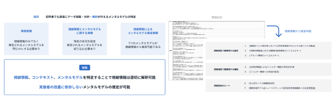
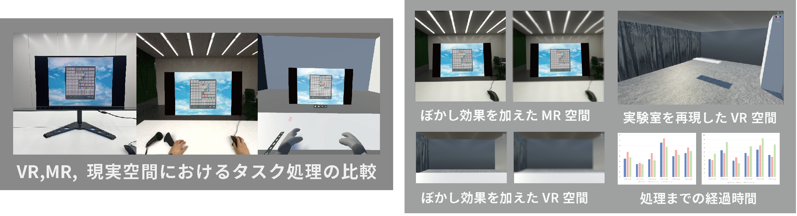
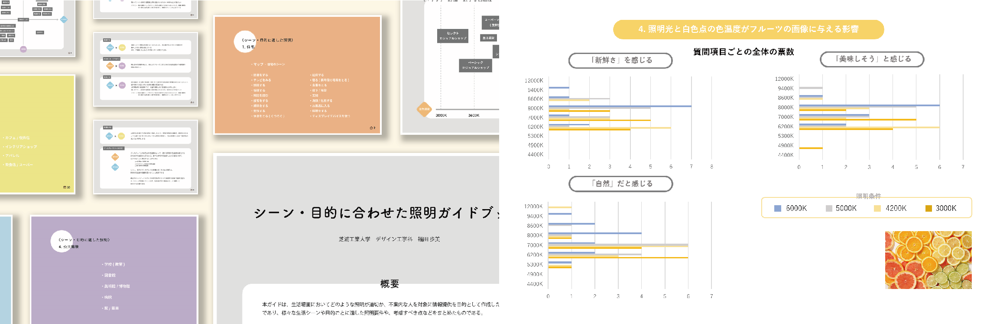
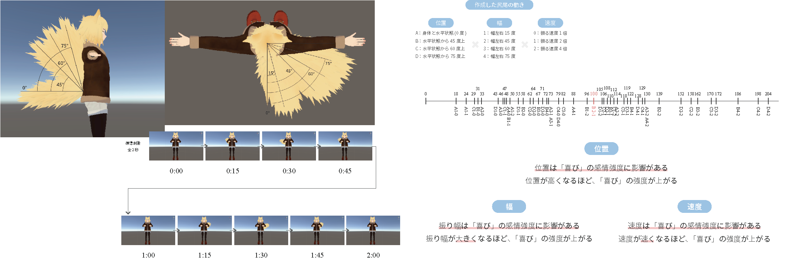
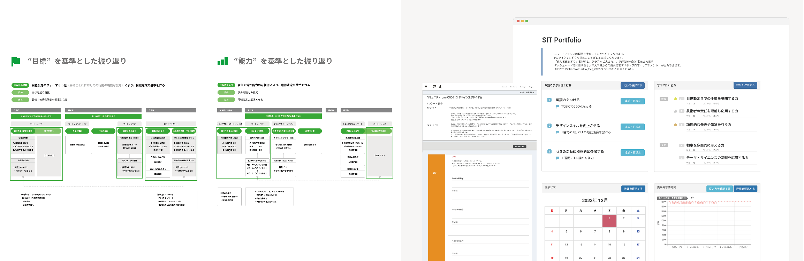
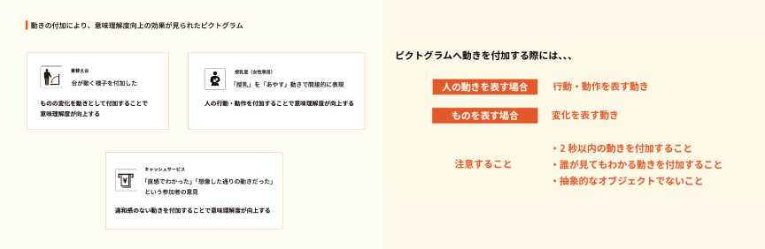
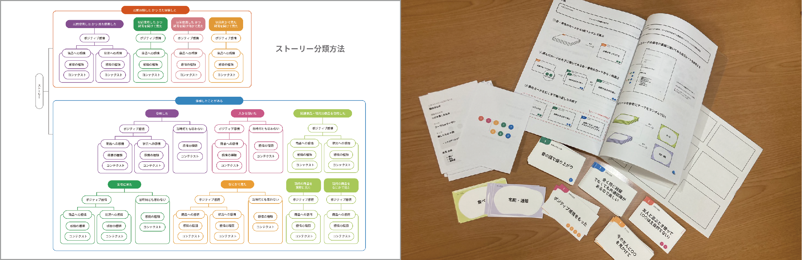
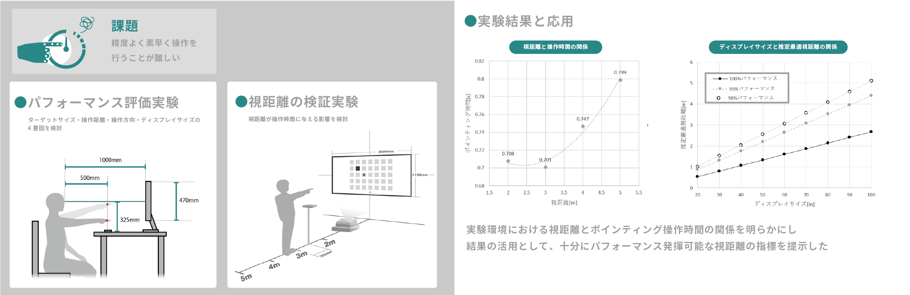
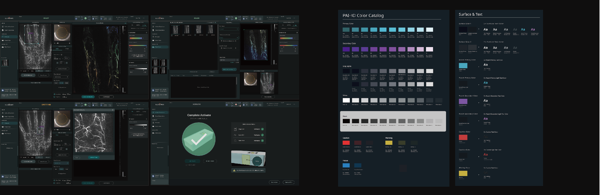

Research
ユーザーエクスペリエンスデザイン
研究室
吉武 良治 教授
よい体験のための商品やサービスを創造し、 デザインする！
現代は「優れた技術や機能の豊富さ」だけでなく、ユーザーが商品やサービスを通じて得る“体験（エクスペリエンス）”「使いやすさや使い心地・満足感、そして使った後の好印象」を重視した取り組みが大切になっています。 ユーザー中心設計（UCD又はHCD）や人間工学の手法を軸に、よりよい体験のためのサービスデザイン、ユーザーインタフェースデザイン等の研究をしています。
-

視線情報によるメンタルモデルの推定
伊藤 拓巳 -

VR,MR の効果的な活用方法の検討
安永 悠里 -

照明による生活の質向上
- シーン・目的に合わせた照明ガイドブックの提案 -
福田 歩美 -

メタバースにおけるアバターの感情伝達向上
- 尻尾の動きを題材として -
三本木 慎太郎 -

学修行動における振り返り体験向上
- 芝浦工業大学の取り組みを事例に -
佐久間 瑞季 -

施設案内表示の意味理解度向上
- 動きのあるピクトグラムの提案 -
丸 千華 -

レトロ商品に感じるストーリーの分類
- 体験価値デザイン手法提案のために -
北城 満理奈 -

大型ディスプレイのジェスチャー操作における操作性の向上
岩田 昂樹 -

エンジニアのためのマイクロインタラクション活用ツールの検討と提案
- 学習支援オンラインサービスを題材に -
小澤 佑花 -

光超音波3Dイメージング装置の撮影用UIの研究
- 人間中心設計プロセスを適用した提案 -
山本 瑛士